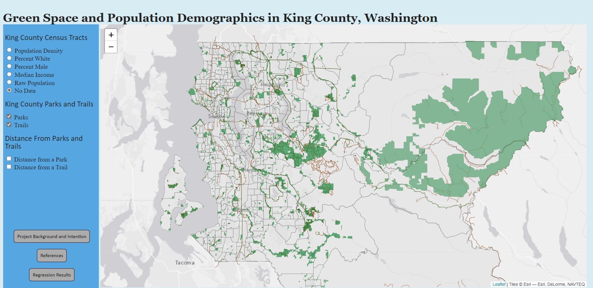
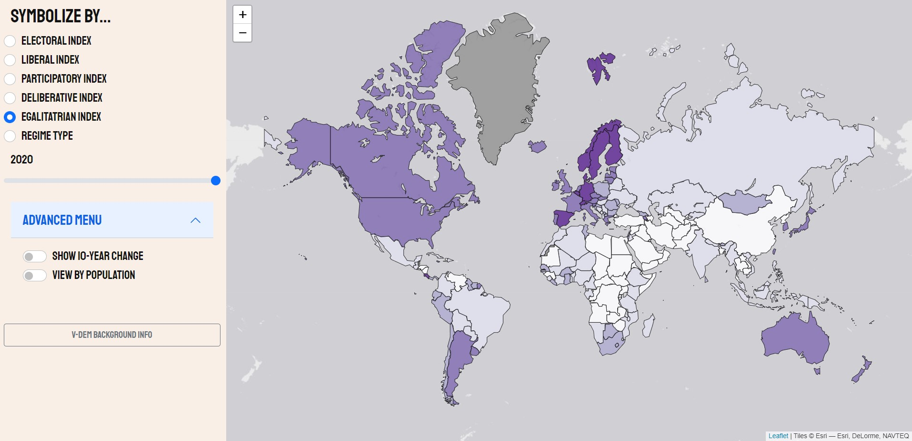
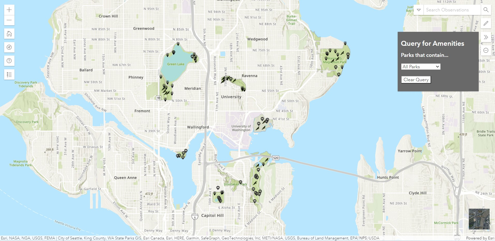
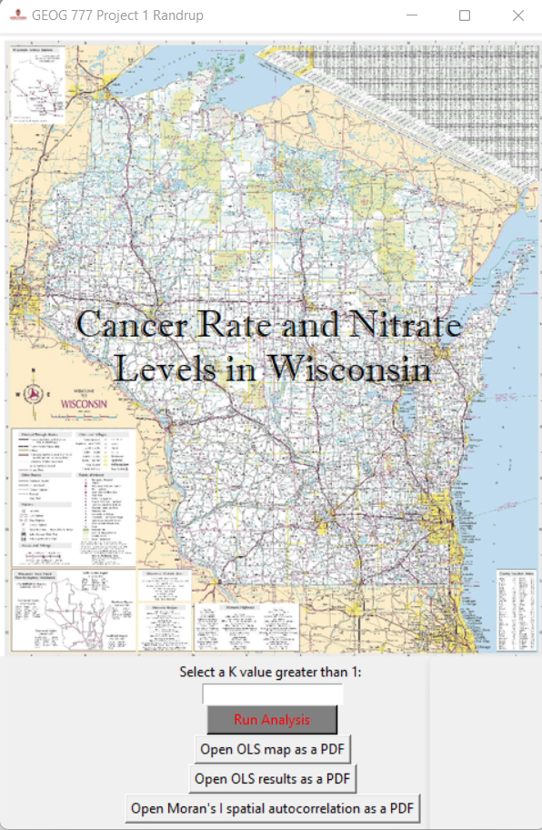
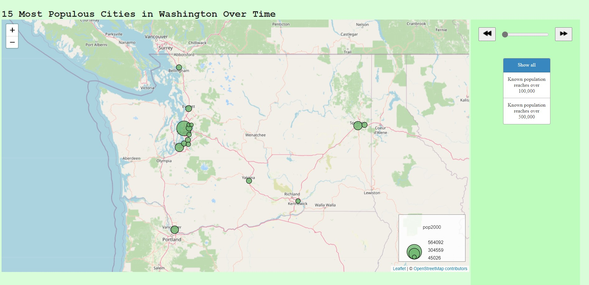
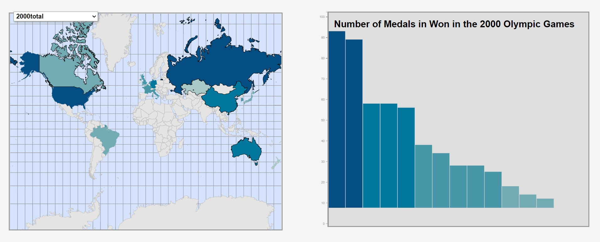

King County Park Access and Census Demographics

Varieties of Democracy Explorer


Fastest Known Time of the Year North America Winners

tkInter ArcPy GUI

Ultimate PNW Bike Route


Olympic Medals Coordinated Visualization

Washington State Parks

King County, WA demographics

US National Land Cover Changes

Long Trail, FKT of the Year, M2

Wonderland Trail, FKT of the Year, F4

Washington State Basics

Puget Sound Ferry Routes